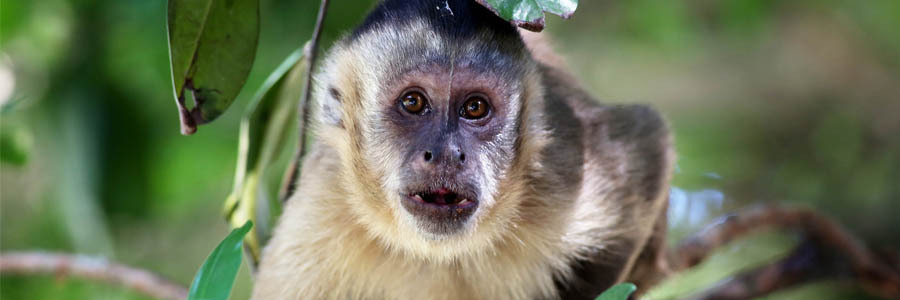
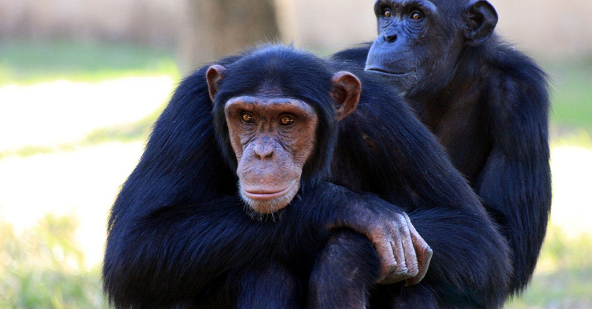
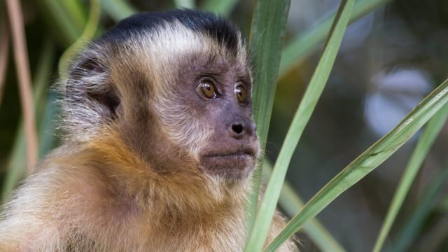

Macacos
  
"Macaco é um termo utilizado para referir-se a algumas espécies de primatas. Nem todos os primatas são macacos, mas todos os macacos são primatas. A ordem Primates está dividida em duas subordens: Strepsirrhini e Haplorrhini. Na subordem Strepsirrhini, estão inclusos lêmures, lórises e gálagos. Na subordem Haplorrhini, por sua vez, incluem-se os társios e antropoides. Os antropoides incluem os macacos e o ser humano."
"Os macacos são animais importantes para o meio ambiente, atuando, por exemplo, na dispersão de espécies vegetais. Infelizmente, nos dias de hoje, observa-se que várias espécies de macacos estão ameaçadas de extinção devido a fatores como fragmentação de habitat, caça, tráfico de animais e doenças"
Os macacos são animais mamíferos, apresentando, portanto, pelos e glândulas mamárias. Os pelos recobrem o corpo do animal e apresentam diferentes tonalidades, a depender da espécie que estamos analisando. O mico-leão-dourado, por exemplo, possui pelos que variam do dourado ao vermelho-dourado, enquanto o macaco-aranha-de-cara-preta possui pelagem preta. Os macacos são animais pertencentes ao grupo dos primatas, apresentando, portanto, algumas características de tal grupo. São características dos primatas olhos posicionados frontalmente, córtex cerebral bastante desenvolvido, dieta onívora e presença de polegares opositores. Esta última característica permite que o polegar toque a superfície em que está localizada a impressão digital na ponta de todos os outros quatro dedos. Isso auxilia na manipulação de objetos. Há macacos arborícolas, porém há também espécies que vivem no solo. De maneira geral, a maioria dos macacos é mais ativa durante o dia e vive em bandos, os quais têm comportamento social.